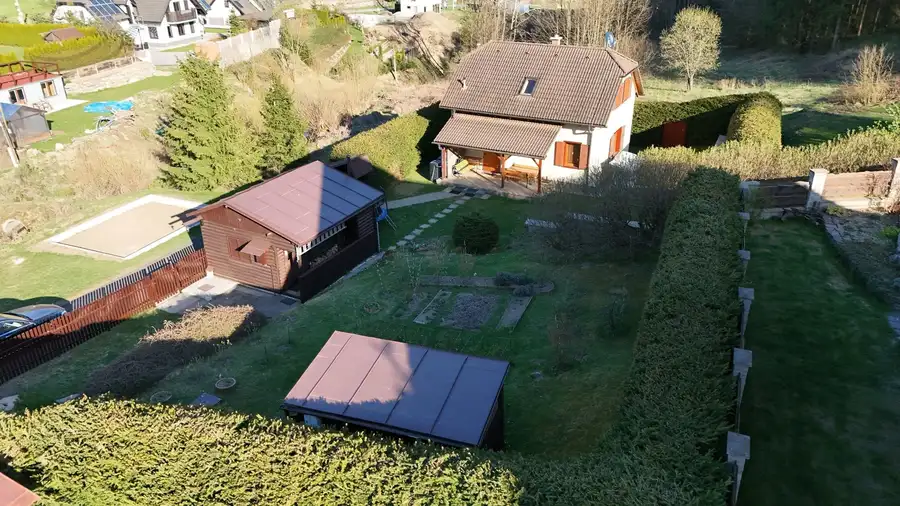
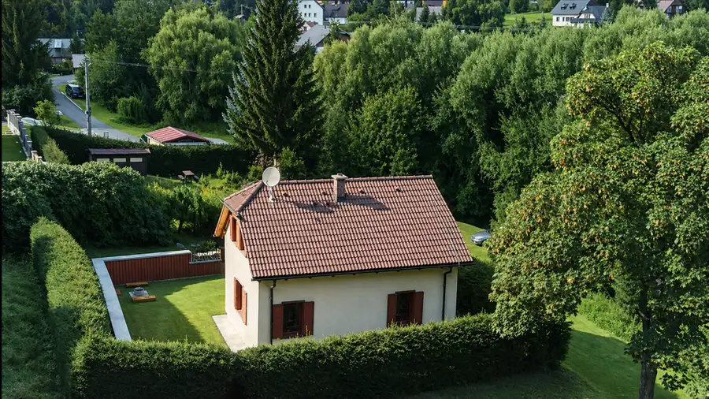
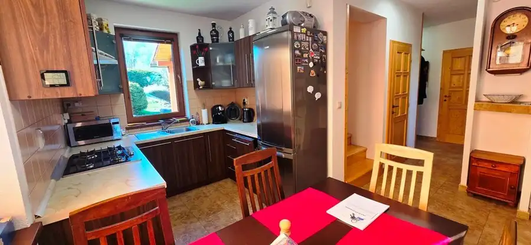
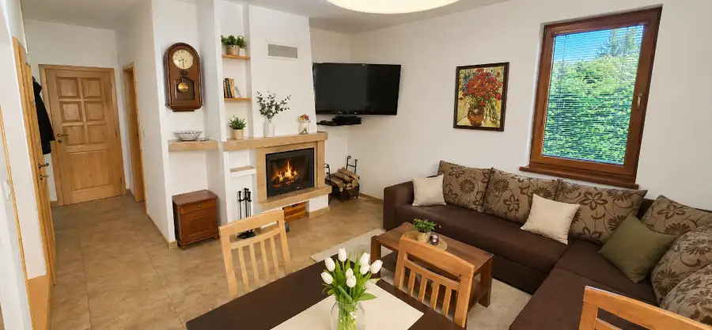
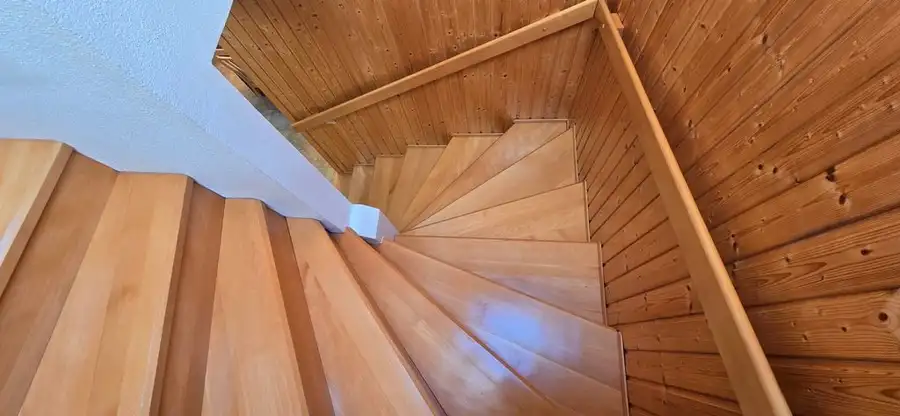
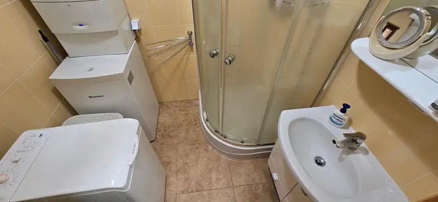
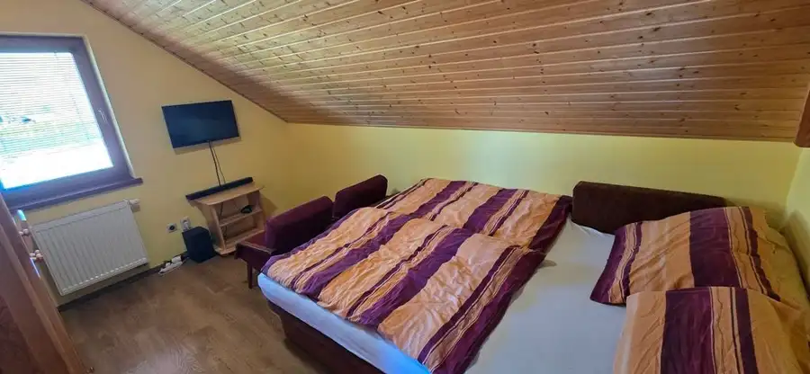
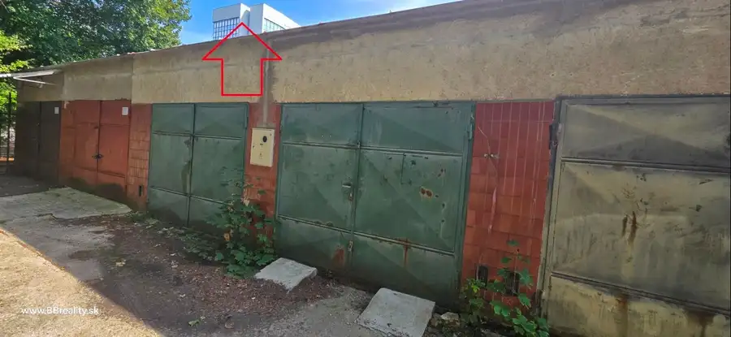
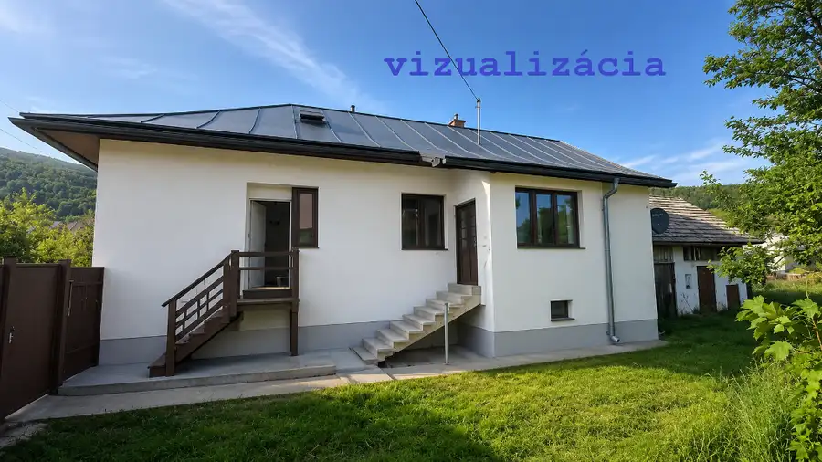
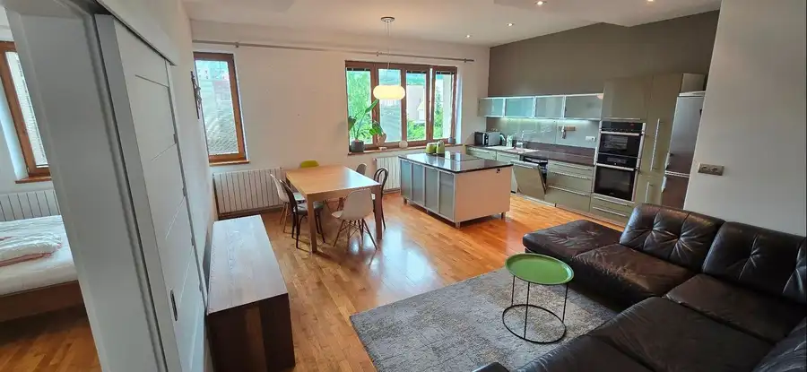

Exkluzívne na predaj novostavba rodinného domu, Krahule, www.bbreality.sk
Krahule







- Plocha694 m²
- StavNovostavba
- VlastníctvoOsobné
- Energetická triedaA
O nehnuteľnosti
Exkluzívne na predaj novostavba rodinného domu so zrubom v srdci KrahúľRealitná kancelária BB-REALITY, s.r.o., člen Realitnej únie SR, vám exkluzívne ponúka na predaj výnimočnú nehnuteľnosť v obľúbenej horskej obci Krahule. Ide o modernú novostavbu rodinného domu, ku ktorej prislúcha samostatný zrub a záhradný domček, čo poskytuje široké možnosti využitia na trvalé bývanie, rekreáciu aj komerčný prenájom. ZÁKLADNÉ ÚDAJE A TECHNICKÝ STAV:• Zastavaná plocha a nádvorie: 172 m²• Typ objektu: Rodinný dom s 2 nadzemnými podlažiami (z toho jedno je podkrovné), nepodpivničený.• Rok kolaudácie: Daný do užívania v roku 2009 (vynikajúci technický stav s predpokladanou životnosťou 100 rokov).• Konštrukcia stavby: Murovaná zo silikátových tvárnic (hrúbka do 40,0 cm) s kontaktným zatepľovacím systémom na báze polystyrénu.• Základy a stropy: Betónové monolitické základy so zvislou a vodorovnou izoláciou proti zemnej vlhkosti, murované navýšenie stien v podkroví do výšky 50 cm. Železobetónový strop nad 1. NP, nad podkrovím zateplený drevený trámový strop s rovným podhľadom zo sadrokartónu.• Strecha: Sedlová s krytinou z ťažkej pálenej škridle. Kompletné klampiarske konštrukcie z pozinkovaného plechu, ostatné klampiarske prvky z hliníkového plechu.• Okná a dvere: Plastové okná s izolačným trojsklom, interiérovými kovovými žalúziami a štýlovými drevenými okenicami. Plastové vstupné dvere, vnútorné dvere drevené (plné aj presklené) osadené v obložkových zárubniach.• Podlahy a omietky: Vnútorné omietky vápenné stierkové hladké, doplnené o keramické obklady v kúpeľni, WC a časti kuchyne. V izbách na prízemí a v podkroví sú veľkoplošné laminátové parkety. V kúpeľni, WC, kuchyni, obývacej izbe a na chodbe je keramická dlažba.• Schodisko: Interiérové schodisko vyrobené z kvalitného tvrdého dreva.• Mesačné náklady: cca 110 € (plyn 50 €, elektrina 30 €, internet + TV 30 €). DISPOZIČNÉ RIEŠENIE:• 1. NP (Prízemie): Zádverie, samostatná izba, komora, samostatné WC, technická miestnosť so sprchovým boxom. Kuchyňa s linkou v tvare U (dĺžka 4,75 m, vstavané spotrebiče) a obývacia izba s krbom.• Podkrovie: Chodba so vstavanou skriňou, 3 samostatné obytné izby a veľká kúpeľňa (akrylátová rohová vaňa, umývadlo, závesné WC, bidet).• Exteriér: Odvodnený pozemok ohraničený potokom, záhrada s drobným ovocím, stavebný pozemok na garáž a rozpracované parkovisko pre 2 autá s platným stavebným povolením. SIETE, VYKUROVANIE A TECHNOLÓGIE:• Vykurovanie: Plynový kondenzačný kotol Junkers (ovládanie cez appku) – podlahové rozvody na 1. NP, v podkroví radiátory. Alternatívne krb. Ohrev vody zásobníkovým ohrievačom.• Inžinierske siete: Verejný plyn, elektrina (220V/380V), voda a kanalizácia. TV rozvody v celom objekte.• Vodné zdroje: Dva nezávislé zdroje s vlastnými vodomermi (nádrž Turček pre dom, obecný zdroj pre zrub)• Internet a bezpečnosť: Internet Telekom vzduchom pre UHD TV. Alarm s pohybovými senzormi a SMS, kamerový systém (6 kamier) so záložným zdrojom. LOKALITA A VYBAVENOSŤ: Horská obec Krahule (pôvodne Blaufuss) leží v geografickom strede Európy. Vznikla v 14. storočí ako osada nemeckých drevorubačov a baníkov. Okolitá príroda Kremnických vrchov ponúka čistý horský vzduch a nádherné výhľady. V zime je k dispozícii stredisko SKI Krahule a bežecké trate, blízko je stredisko Skalka (wellness, ferraty). V lete je lokalita rajom pre turistov a cykloturistov. V obci sú potraviny, zrekonštruovaný kostol, zberný dvor a koná sa tu podujatie „Krahulský kotlík. 360° VIRTUÁLNA PREHLIADKA: Nestrácajte čas a pozrite si nehnuteľnosť okamžite prostredníctvom panoramatickej obhliadky na adrese: www.bbreality.sk CENA A FINANCOVANIE: Uvedená cena nehnuteľnosti je konečná a zahŕňa:• Províziu realitnej kancelárie BB-REALITY, s.r.o.• Kompletný právny servis zabezpečený renomovanou advokátskou kanceláriou.• Poradenstvo a bezplatnú ponuku financovania. Hypotekárny servis: Naša spoločnosť sa špecializuje na finančné poradenstvo a kompletné spracovanie úverov. Spolupracujeme so všetkými bankami (ČSOB, mBank, Oberbank, Poštová banka, Prima banka, Slovenská sporiteľňa, Tatra banka, UniCredit, VÚB). Nájdeme pre vás najvýhodnejšie podmienky na trhu. KONTAKT:V prípade otázok alebo záujmu o osobnú obhliadku ma neváhajte kontaktovať:• Meno: Ing. Ján Vundr• Tel.: 0907 99 88 77, 048 419 18 17• E-mail: vundr@bbreality.sk• Web: www.bbreality.sk• Adresa: BB-REALITY, s.r.o., Skuteckého 17, Banská Bystrica
Parametre
- Druh
- Rodinný dom
- Dátum zverejnenia
- 18. 06. 2026
- Energetický certifikát budovy
- A
- Energie
- 110
- Plocha pozemku
- 0 m²
- Podpivničenie
- Nedostupné
- Počet nadzemných podlaží
- 2
- Prístupová komunikácia
- Asfaltová
- Rok výstavby
- 2009
- Stav nehnuteľnosti
- Novostavba
- Terén pozemku
- Rovinatý
- Typ
- Predaj
- Typ konštrukcie
- Tehlová
- Vlastníctvo
- Osobné
- Vybavenie
- Záhrada, Krb, Altánok / posedenie, Dielňa, Záhradný domček, Úschovňa bicyklov, Vyhradené parkovanie
- Vykurovanie
- Podlahové, Iné
- Zastavaná plocha
- 172 m²
- Úžitková plocha
- 694 m²
Kde to je


Mohlo by Vás zaujímať

Komerčné priestoryNové 28 000 €Predaj: garáž, Banská Bystrica, 29. augusta - CentrumBB.sk Banská Bystrica 22 m²
DomNové 59 000 €Predaj rodinného domu s bohatou históriou v srdci Horehronia – obec Bacúch, www.bbreality.sk, Ing. Jan Vundr Bacúch 105 m²
BytNové 320 000 €Predaj 4-izbový byt, Ružomberok, A. Bernoláka, 130 m2, www.BBreality.sk Ružomberok 4-izbový130 m²2. podlažie